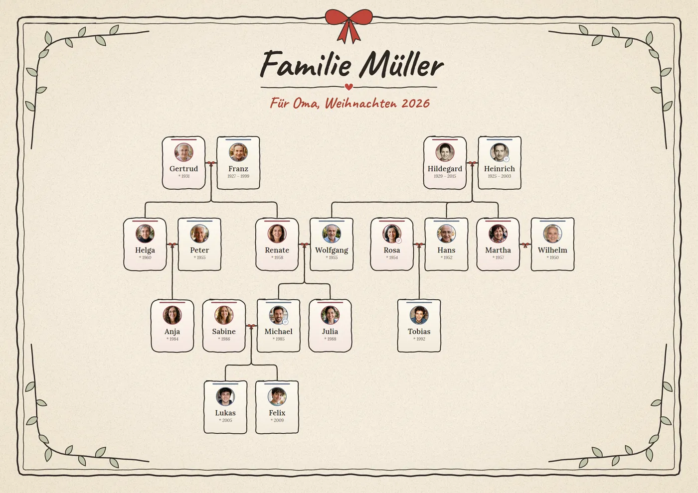
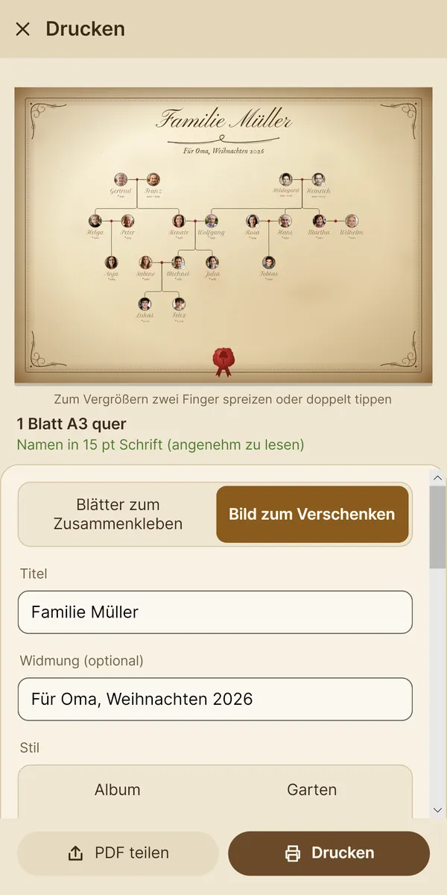

Ein Stammbaum als Weihnachtsgeschenk
Kaum ein Geschenk rührt Großeltern so sehr wie die ganze Familie vereint, mit Fotos, in einem Rahmen. Und du musst kein Ahnenforscher sein: Mit dem Handy und zwei, drei Abenden ist er fertig.

Geschenkideen
Ein gerahmtes Bild für die Großeltern
Der Klassiker: der Stammbaum von den Urgroßeltern bis zu den Enkeln, mit einem Foto von jedem, Titel und Widmung. In 30×40 cm passt er ins Regal; in 50×70 wird er zum Mittelpunkt des Wohnzimmers.
Das PDF für die ganze Familie
Schick an Weihnachten das PDF in die Familiengruppe. Jeder kann es auf dem Handy öffnen und hineinzoomen, und die Cousins erfahren endlich, wie die Urgroßeltern hießen.
Ein Stammbaum, den alle gemeinsam ergänzen
Fang mit dem an, was du weißt, und schick den Stammbaum an Onkel, Tanten und Cousins: Jeder ergänzt seinen Zweig mit Ramo, für sie kostenlos, und schickt ihn zurück. Ramo führt die Versionen ohne doppelte Personen zusammen. Das fertige Bild ist ein Geschenk der ganzen Familie.
Zur Geburt
Der Stammbaum eines Babys mit Eltern, Großeltern und Urgroßeltern ist eine Erinnerung fürs Leben und ein schönes Geschenk für die frischgebackenen Eltern.
Schritt für Schritt, rechtzeitig zu Weihnachten
- Drei Wochen vorher: Namen, Daten und Fotos sammeln. Frag Eltern, Onkel und Tanten (unauffällig, wenn es eine Überraschung ist) und fotografiere die alten Bilder im Familienalbum mit dem Handy ab. Kennst du ein Datum nicht genau, markiere es als ungefähr.
- Zwei Wochen vorher: den Stammbaum erstellen. Fang bei dir oder bei den Großeltern an und füge per Fingertipp Eltern, Partner und Kinder hinzu. Ramo ordnet alles selbst an.
- Zehn Tage vorher: das Bild vorbereiten. Wähle unter Drucken „Bild zum Verschenken“, die Rahmengröße, den Stil, den Titel und die Widmung. Prüfe, ob die Namen lesbar sind (so geht's).
- Eine Woche vorher: drucken. Bring das PDF in den Copyshop, auf mattes Papier, und besorg einen Rahmen in dieser Größe. Im Dezember brauchen Online-Druckereien länger, also nicht bis zum letzten Tag warten.

Welcher Stil?
- Pergament: gealtertes Papier, Schönschrift und Siegel. Der traditionellste.
- Papier und Tinte: eine Federzeichnung mit roter Schleife, sehr weihnachtlich.
- Garten und Album: schlichter und heller, für moderne Wohnungen.
Du kannst den Stil so oft wechseln, wie du willst, und siehst sofort das Ergebnis.
Wenn die Zeit knapp ist
Druck den Stammbaum zu Hause oder im Copyshop um die Ecke auf A4 oder A3: Ramo passt ihn ans Blatt an und zeigt dir die Schriftgröße. Und wenn selbst das nicht mehr klappt, ist auch das PDF auf jedem Handy ein Geschenk.
Bilder zum Verschenken gehören zu Ramo Komplett, einer einzigen Zahlung ohne Abo. Den Stammbaum erstellen, als PDF teilen und auf Blättern drucken ist kostenlos.
Weitere Ratgeber